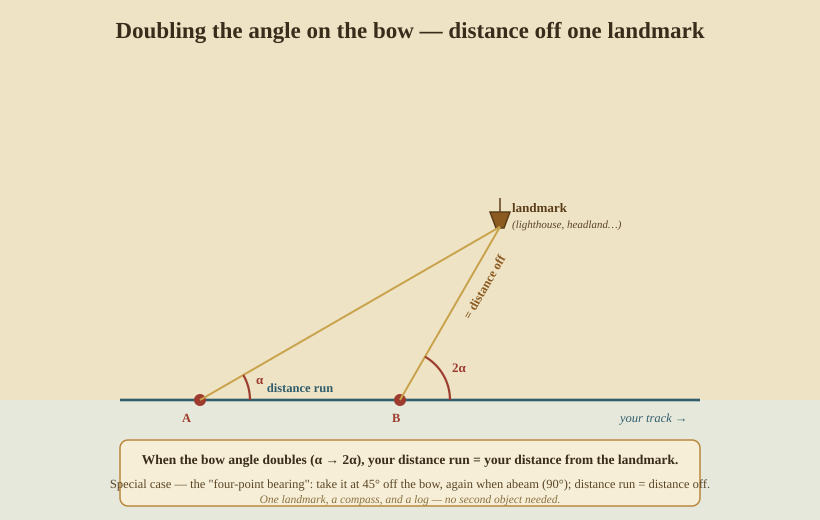
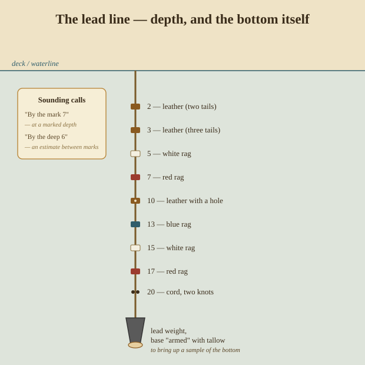

Piloting & Coastal Navigation
Out of sight of land you work in circles and lines of position; near it, the game changes. The land itself is full of known marks — headlands, lighthouses, church spires, soundings — and piloting is the art of fixing position from them, quickly and often, in the very waters where a mistake puts you on the rocks. It is where navigation is most demanding and least forgiving.
20. The chart and the rhumb line
Coastal work is done on a chart — and for the navigator the great virtue of the Mercator chart (Part V) is that a straight pencil line is a rhumb line, a course of constant compass bearing. You can lay a course with a parallel rule, read its angle off the printed compass rose, and steer it. The price of that convenience is distortion of area toward the poles, and that a great-circle (shortest) route appears as a curve — but for piloting, straight-is-a-course is exactly what you want.
Charts also carry the two things that keep you off the bottom: depths (soundings, and the depth contours joining equal ones) and the nature of the bottom (sand, mud, rock, shells), both of which double as position clues.
Who & when. Medieval Mediterranean pilots used portolan charts — strikingly accurate coast-and-harbour charts webbed with compass rhumb lines — from the 13th century. Mercator’s 1569 world projection put deep-sea sailing on the same straight-line footing.
21. Bearings and fixes
The fastest fix near land: take compass bearings to two or three charted objects, correct each to true (Part V), and draw them on the chart as lines from the objects. Where they cross is your position.
- Two bearings cross at a point — a fix, best when the objects are about 90° apart so the cut is clean.
- Three bearings are better still: if the three lines don’t meet in a point but make a small triangle (a “cocked hat”), that triangle is your uncertainty — take the position at its safest corner (nearest the danger).
- Transits (ranges) are the most precise line of all and need no compass: when two charted marks come into line (say a beacon dead astern of a church), you are exactly on the line joining them. Sailors use transits to check compass deviation and to run safe channels.
- Danger bearing — the defensive cousin: pick a mark and a bearing that just clears an offshore hazard, and simply keep your bearing to the mark on the safe side of that value. No continuous fixing required, just “stay clear of this line.”
22. Distance off with one mark — the running fix
Often only a single landmark is in sight. You can still get a fix by using time and your own motion, taking two bearings of the one object with a known run between them. The neatest form is doubling the angle on the bow:

Note the angle between your heading and the landmark (the “angle on the bow”). Sail on until that angle has doubled. By the geometry of the isosceles triangle, your distance from the landmark now equals the distance you ran between the two bearings — which your log gives you. A favourite special case is the four-point bearing: take the first bearing at 45° (four compass points) off the bow and the second when the mark is abeam (90°); the distance run between them is your distance off as you pass. One landmark, a compass, and a log — nothing else.
23. The lead line — depth, and the bottom itself
Before echo sounders, depth was found with a lead line: a marked rope with a lead weight, heaved ahead and read as the ship passed over it.

The marks are made so a leadsman can read them by feel in the dark — leather tabs, white and red rags, a leather with a hole, cords with knots, at set fathoms. He calls the reading: “by the mark 7” when the depth falls on a mark, “by the deep 6” when he judges it between marks. Crucially, the base of the lead is armed with tallow so it brings up a sample of the bottom — sand, shell, mud, or a clean lead off bare rock — and a matching sounding and bottom-type against the chart is itself a position line. In fog off a shelving coast, a line of soundings run along your track, matched to the chart, can fix you when nothing is in sight at all.
Who & when. Sounding is among the oldest techniques of all — Herodotus describes Nile pilots sounding with a lead, and the armed lead bringing up bottom samples was standard on Greek and Roman ships.
24. Lights, buoys, and the pilot book
Finally, the coast is furnished for the navigator:
- Lighthouses and lightships each show a distinctive character — a pattern of flashes, occultations, and colour, with a period in seconds — so one light is told from another and identified against the chart’s light-list.
- Buoys and beacons mark channels and dangers by a buoyage system of shape, colour, and topmark, telling you which side to pass.
- Pilot books (sailing directions) describe every coast in prose — the set of the tides, the leading marks into each harbour, the dangers and the anchorages — the accumulated local knowledge no chart can hold.
Who & when. Written sailing directions are ancient: the Greek periplus listed harbours and distances along a coast; the medieval European rutter (French routier) did the same with courses, tides, and soundings — the direct ancestor of today’s pilot books.
Piloting is navigation with the safety margins removed, done fast and checked constantly. Offshore, when even the chart’s marks are gone, there remains one more body of skill — reading the sky, sea, wind, and life of the ocean directly. That is Part VII.